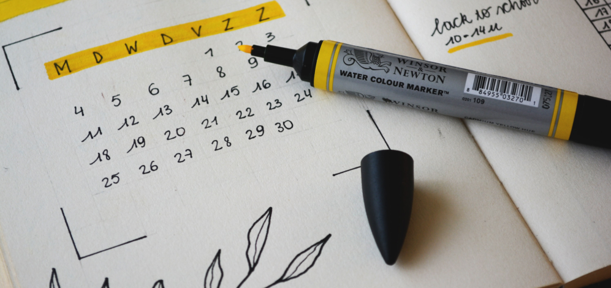

-
Как себя мотивировать
Теги: путешествия, друзья
29.09.2020
Расскажу о биопсихологической теории личности Джеффри Грея, которая помогла мне разобраться в работе мотивационных стимулов. Узнала я о ней из книги «Воля и самоконтроль. Как гены и мозг мешают нам бороться с соблазнами» Ирины Якутенко.
Согласно этой теории, человеческое поведение контролируют две системы: BAS (Behavior Activation System) и BIS (Behavior Inhibition System), каждая из них обусловлена генетически. Грей использовал её для понимания того, как вознаграждение или наказание связаны с беспокойством и импульсивностью. Самое интересное, что активность этих систем у людей различна. Зная, какая из них доминирует, можно понять, какие стимулы использовать для эффективной мотивации.
Моё поведение регулируется больше BAS, поэтому при планировании целей я всегда использую позитивный стимул.
BAS (Behavior Activation System) работает на ощущение позитивных эмоций. Мотивация людей, чье поведение в основном определяется этой системой, направлена на получение вознаграждения. Они стремятся получить одобрение и награду за свои действия. Такие люди более мотивированы в учебе и развитии разных навыков. Однако носители активной BAS склонны к импульсивности и желанию немедленного вознаграждения, что может мешать долгосрочной работе. BIS (Behavior Inhibition System) ответственна за избегающее поведение. Люди с этой активной системой мотивируются стремлением избежать проблем. Они более чувствительны к наказанию и новому опыту, а также стремятся избежать ситуаций, когда чувствуют, что могут потерпеть неудачу.
Определив, к какому типу относится поведение, вы узнаете, какие стимулы использовать для достижения поставленной цели. Например, я решила выучить английский — само изучение не является целью, поэтому нужно правильно её сформулировать. Если моё поведение регулируется BAS, мне нужно выбрать своей конечной целью какую-то награду: например, если я выучу английский, то смогу смотреть фильмы в оригинале. Если же я склонна к BIS поведению, целью нужно выбрать избежание проблем: если я заговорю на английском, то не потеряюсь в новой стране. И это можно использовать в различных сферах жизни.


Отличная статья! Спасибо.
Отличный текст, добавила в закладки.
Основательный материал! Можешь посоветовать какие-то книги на эту тему?
Оставить комментарий